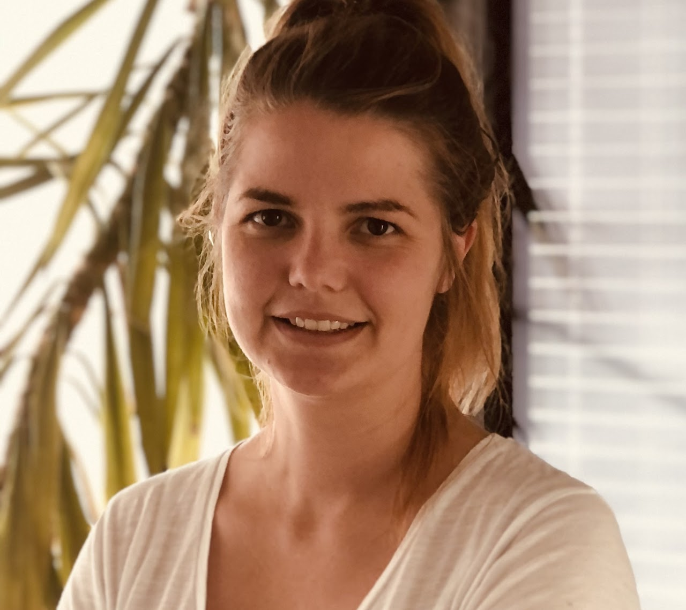

Lea Wilken (prev. Müller)
AI | Computer Vision | 3D | Humans
I am a Research Scientist at Meta Superintelligence Lab working with Matt Feiszli and the SAM3D team. Prior to that, I was a Postdoctoral Researcher at UC Berkeley, CA, USA, working on human body pose and shape reconstruction and human behavior understanding under the mentorship of Angjoo Kanazawa and Jitendra Malik. During my PhD at the Max Planck Institute for Intelligent Systems in Tübingen, Germany, in the Perceiving Systems Department lead by Michael Black, my research focused on 3D human pose and body shape estimation from images. I specialized in understanding and reconstructing physical contact humans make with themselves and with other people during interaction.
Show more bio ...
During the third year of my PhD, I got to visit UC Berkeley for six months to work with Angjoo Kanazawa. This collaboration was a great experience that allowed me to learn broader concepts in computer vision and apply them to the field of social interaction. I was further lucky to learn from and collaborate with postdoctoral researchers, in particular Chun-Hao Paul Huang, Dimitris Tzionas, and Georgios Pavlakos, and to receive support and guidance from Katherine Kuchenbecker and Gerard Pons-Moll as part of my thesis advisory committee.
Prior to my PhD, I graduated from the University of Jena in Computational and Data Science. Advised by Joachim Denzler, we collaborated with the department of general psychology and cognitive neuroscience to investigate how humans influence each other's facial expressions in conversations from video data. In my Bachelor's, I studied Mathematics with Psychology as an application subject at the University of Heidelberg.
Research
My research area is computer vision, in particular 3D virtual humans, their physical appearance and social interactions involving touch. This involves estimating 3D human pose and shape from an image for a single person, but also for multiple people during interaction. My goal is to understand how humans communicate and behave towards each other at scale.
Why touch? Because it lets us navigate the world and directly effects human behavior. For example, did you know that touch increases generosity towards the touch-giver? Here is a blog post explaining why touch is important and how it effects our life. I am truly excited about this line of research!
One aspect of human touch is a person's body shape. In SHAPY, we reconstruct human body shape from a single image using linguistic body shape attributes. We can further leverage our methods together with human annotations to investigate body shape bias. In this blog post we use our research to uncover potential body shape biases based on the 2021 German Election (Bundestagswahl) Candidates.
If you are interested in collaborations, please send an email to
lea.wilken.research (at) gmail.com
News
| 2025-11-10 | I joined Meta Superintelligence Lab |
| 2024-09-14 | ECCV 2024: I will give a talk at the Social AI Workshop |
| 2024-09-14 | ECCV 2024: I will give a talk at the AI for 3D Content Creation Workshop |
| 2024-03-14 | I successfully defended my dissertation SUMMA CUM LAUDE ✨ |
| 2023-12-07 | I will give a talk about contact in 3D human mesh reconstruction at the 46th Pattern Recognition and Computer Vision Colloquium at Prague University |
| 2023-12-04 | I will start a PostDoc position at UC Berkeley in January with Jitendra Malik and Angjoo Kanazawa ✨ |
| 2023-11-07 | I was featured in the IMPRS-IS Spotlight Scholar Session with a short article |
| 2024-03-14 | I received the 2023 MPI-IS Outstanding Female Doctoral Student Honorable Mention Prize ✨ |
Blog
| 2024-03-20 | Touch in human mesh reconstruction — An article motivating computer vision researchers to study self- and human-to-human contact. |
| 2021-09-05 | Could body shape determine the German election? — Body shape biases unveiled for the 2021 German election candidates. |